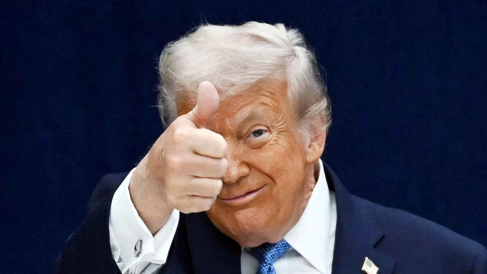
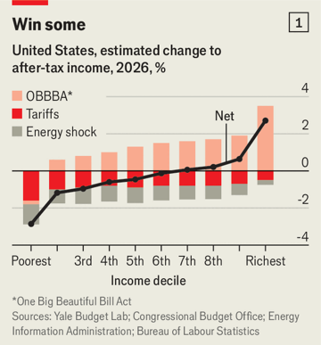
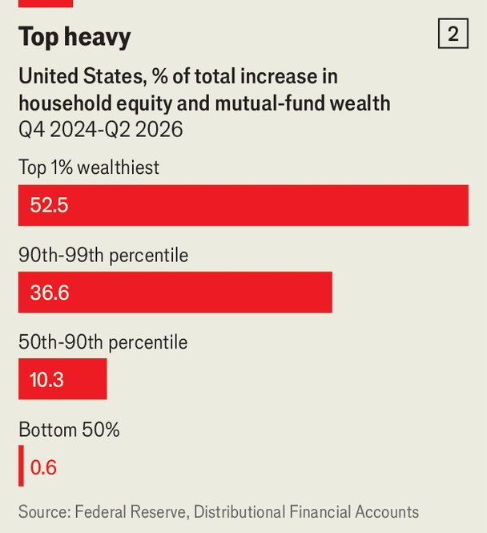

特朗普经济学的赢家与输家
The winners and losers of Trumponomics
总统承诺帮助普通美国人，实际结果却相当不同

- 特朗普2024年承诺的“黄金时代”没有到来：关税与伊朗战争推高日常开销，减税和股市上涨的好处却高度集中在最富的十分之一家庭，收入分配呈明显的反向走势。
- 本刊测算，2026年最穷的十分之一家庭将损失近3%的收入，最富的十分之一反而获益近3%，中间家庭净损失超过400美元，医保补贴到期还要再添近800美元保费。
- 制造业岗位没有回流，2025年初以来反而减少约2万个；就业增量几乎全部来自医疗与社会救助以及AI数据中心建设，私营部门实际时薪同比下降0.7%。
- 民意已经转向：近三分之二美国人认为经济变糟，受油价与关税冲击最重的农民群体倒向民主党，中期选举前白宫只能靠每人5000美元的口头承诺救场。
民粹主义者都爱向劳动者许下大愿，特朗普却直接预言了一个黄金时代。2024年大选前，他告诉选民，再过几天就能迎来“世界上最好的工作、最厚的薪水、最光明的经济前景”。他声称，自己这套关税、减税加驱逐移民的非常规组合，会压低生活成本、复兴美国工业腹地、让中产阶级重归繁荣。
总统兑现了吗？10月22日，白宫宣称他的政策正在推高工资、催生“蓝领繁荣”。美国经济确实增长强劲，三季度产出折年率有望达到3%左右。但特朗普声称要帮的许多人反而受损，更富的美国人则受益。
政治上最致命的是那些抬高日常开支的政策。纽约联储测算，全面关税已把消费品价格推高约2%；耶鲁预算实验室估计，今年这将让普通家庭多花1100美元。对伊朗的战争又让油价飙升，到年底预计再给普通家庭增加1000美元开支。

反方向的力量来自特朗普的标志性税收与支出法案《一个大而美的法案》，它使平均退税额增加约340美元。该法还设立了“特朗普账户”，让符合条件的新生儿获得1000美元投资股票，意在扩大股市的全民持股。但法案最大的好处通过减税流向了富人，同时收紧了食品券（迄今逾500万美国人失去该项福利）和面向穷人的医疗补助。
为汇总得失，本刊把关税、油价上涨与税支法案对不同收入群体的影响合并测算（2026年）。我们估计，最穷的十分之一家庭（税后及转移支付后平均收入约3.7万美元）将损失近3%的收入；最富的十分之一（平均税后收入近50万美元）将获益近3%（见图1）。中间家庭（平均收入约10万美元）损失超过400美元。这还没算国会共和党人去年通过、特朗普背书的一项决定——让加强版“奥巴马医改”补贴到期，据健康政策研究机构KFF测算，这让在交易所购买个人保险的平均保费每年多出近800美元。
住房是另一个难题。房贷利率部分因伊朗战争的通胀效应升破7%，有房者干脆不卖不买，新增供给也更贵。去年建筑商估计，材料关税会让一套典型新房成本增加近1.1万美元。打击移民又造成劳动力短缺：9月全美住宅建筑商协会调查显示，人工成本同比上涨4.2%。受挤压的仍是中低收入选民：据房产网站Zillow，5月起步房销量同比下降5.4%，豪宅销量却上升6.2%。

就业方面，自2025年1月以来，私营部门的增长几乎全部来自医疗与社会救助——这是人口老龄化的需求。AI热潮是另一亮点，数据中心建设相关行业创造了约18万个岗位。但其他行业私营就业几乎停滞：私营部门年薪增速从4%降到3%，通胀上行意味着实际时薪比一年前低0.7%。劳动报酬占非农产出的比重降至1947年有记录以来最低（企业主收入分类的技术调整只能解释部分降幅）。
制造业岗位的复兴尤其落空。制造业产出上升，但就业自2025年1月以来减少约2万个，工厂工资过去一年跑输通胀。在特朗普2024年拿下、如今看来要把参议员席位让给民主党的北卡罗来纳，过去一年近9000个工厂岗位消失。
投资股市的美国人有理由庆祝：AI盛宴推高了标普500。但影响同样极不均衡。据美联储数据，2024年底以来美国居民股票与共同基金财富增加17万亿美元，其中近90%流向最富的十分之一家庭，较穷的一半只占0.6%（见图2）。
这些变化并非无人察觉。皮尤研究中心近期调查显示，近三分之二美国人认为特朗普的经济政策让状况变糟；共和党及倾向共和党的独立人士中也有35%这么看，是1月的近两倍。受油价和关税冲击最直接的选民（如农民）正转向民主党。特朗普如今承诺：若共和党在11月3日保住国会控制权，就给每位成年公民发5000美元。这对仍觉得被落下的选民恐怕没什么安抚作用。